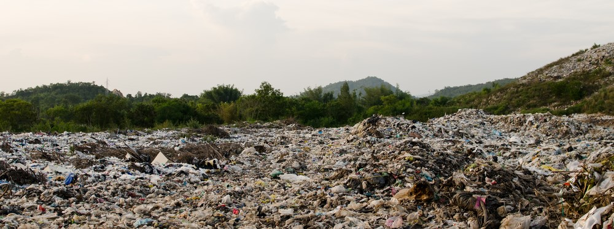

About
Land pollution happens when the ground gets dirty and filled with rubbish, chemicals, or other harmful things. This can come from people throwing litter on the ground, dumping waste in the wrong places, or using too many harmful chemicals on farms. When we don’t take care of the land, it becomes polluted and unhealthy.
Land pollution can hurt plants, animals, and even people. Animals might eat plastic or other trash and get sick. Dirty soil can make it hard for trees and flowers to grow. Plastic also builds up on land and doesn't break down for thousands of years! This means we have plastic mountains and islands.
Before vs After